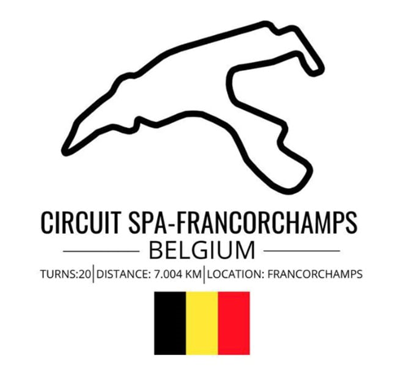
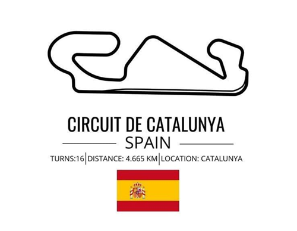
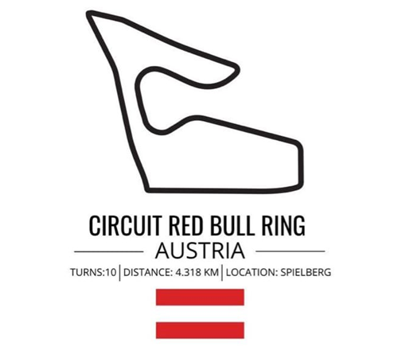

Domů
Závodní okruhy
Týmy
Formule 2
Vlastní zkušenosti
Spa Francorchaps
Závodní okruh se rozkládá v lesnatém údolí pod městečkem Francorchamps. Když přicházíte, první co uvidíte mezi stromy je ikonická zatáčka Eau Rouge. Vypadá opravdu majestátně. Je to pořádný kopec. Celá trať lze obejít kolem dokola. Je zde mnoho nádherných výhledů jak na okruh, tak na údolí a okolní lesy a malý potok, který protéká středem. 
Barcelona-Catalunya
Leží severně od Barcelony u města Montmelo. Díky členitosti krajiny a tvaru okruhu působí jako ideální místo pro rodinný výlet. Všude je blízko. Je zde dobrý přehled o trati. Stojíte na jednom místě a před sebou máte přímo zatáčku okruhu. Otočíte se a vidíte další část o několik desítek metrů níže. Je tu mnoho míst pro posezení na trávě. Bývá tu velmi přátelská atmosféra 
Red Bull Ring
Nachází se na úpatí masivu nad údolím řeky Mur. Je uprostřed horských luk. Mimo závodní víkend se zde pasou ovce. Při pohledu z horní části, za zatáčkou T3, máte přehled o dění na téměř celé trati. Na kopci nad okruhem jsou obrovská stanová městečka a kempy pro návštěvníky většinou z Holandska, kteří sem jezdí při cestě na dovolenou ke Středozemnímu moři podporovat jezdce stáje Redbull Maxe Verstappena. Má zde i vlastní tribunu. 